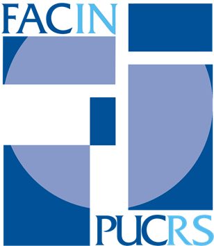

Desenvolvedores
2017/1
Bruno dos Reis Cardoso
Carlos André Sousa Rodrigues
Fabio Henrique S. de Almeida
Gabriel Ferreira Kurtz
Gabriel Pinto Machado
Gustavo Jacob de Oliveira
José Ricardo Di Salvo
Juliana Torres
Larissa Fiorini Martins
Lucka Praisler de Souza
Marcus Vinicius Kuquert
Marlon Pereira da Silva
Rafael Companhoni
2017/2
Eduardo Lima de Oliveira
Gabriel Franzoni
Gabriel Weich
Gregory Silveira Lagranha
Guilherme Henrique Draghetti
Hercilio Martins Ortiz
Homero Junior Leitte de Oliveira Santos
Israel Deorce Vieira Junior
Joao Octavio Freitas Bitelo
Juan Lucas Gauto Collin
Matheus Guzinski Haas
Matheus Mello Vaccaro
Ramiro Araujo Gonçalves de Lima
Coordenador do Projeto
Prof. MSc. Eduardo Arruda
Coordenador
Profª. Drª. Alessandra Costa Smolenaars Dutra
Orientadores
Profª. Drª. Alessandra Costa Smolenaars Dutra
Prof. MSC. Azriel Majdenbaum
Prof. MSc. Eduardo Arruda
Prof. Dr. Daniel Antonio Callegari
Arquiteto de Software
Cássio André Wailer Trindade
Estagiários
Roberta Diebold
Gabriel Loff

Faculdade de Informática
Diretor
Prof. Dr. Fernando Luís Dotti
Coordenador Acadêmico
Prof. Dr. Bernardo Copstein
Coordenador do Departamento de Computação Aplicada
Prof. Dr. Alexandre Agustini
Coordenador do Curso de Engenharia de Software
Prof. Dr. Marcelo Hideki Yamaguti
Reitor
Ir. Evilázio Teixeira
Vice-Reitor
Prof. Jaderson Costa da Costa
Pró-Reitor de Administração e Finanças
Prof. Dr. Alam de Oliveira Casartelli
Pró-Reitora Acadêmica
Profa. Dra. Mágda Rodrigues da Cunha
Pró-Reitora de Pesquisa, Inovação e Desenvolvimento
Profa. Dra. Carla Denise Bonan
Pró-Reitor de Extensão e Assuntos Comunitários
Ir. Manuir José Mentges
Assessoria da Reitoria na Área de Relacionamento com a Rede Marista
Ir. Manuir José Mentges
Assessoria da Reitoria na Área de Ciência, Tecnologia e Inovação
Prof. Dr. Jorge Luis Nicolas Audy
Assessoria de Controladoria
Ivo Cadaval Júnior
Procuradoria Jurídica
Procurador Jurídico: Prof. Dr. Marcos Alexandre Másera
Assessoria de Comunicação e Marketing
Assessora: Profa. Dra. Lidiane Ramirez de Amorim
Assessoria de Planejamento e Avaliação
Assessora de Planejamento: Profa. Dra. Vanessa Manfredini
Assessoria para Assuntos Internacionais e Interinstitucionais
Assessora-Chefe: Profa. Dra. Heloísa Orsi Koch Delgado